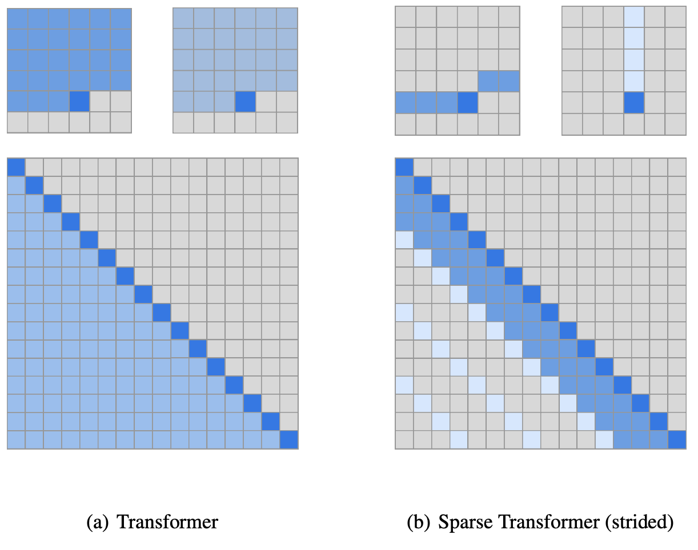

Microsoft's cloud-based platform for real-time AI serving, Brainwave, uses high-performance field-programmable gate arrays (FPGAs) to accelerate inferencing. Project Brainwave inferencing for services such as Bing and Azure. For this internship, my team, which served Bing wanted to know whether inferencing could be further accelerated by supporting sparse computations in Brainwave's BERT framework. To address this, I performed the following tasks:
Through these tasks, I demonstrated the speed gains and latency reductions for the existing BERT framework if sparse computations were used. However, I also identified limitations that needed to be addressed before putting sparse computations into production.
BERT is a pre-trained language model designed for various general natural language processing (NLP) tasks, including but not limited to question answering, next sentence prediction, and sequence classification. This versatile model can be fine-tuned for specific tasks, making it a valuable tool for a wide range of NLP applications.

The full transformer has limitations, particularly in terms of its memory and computational requirements, which increase quadratically as the sequence length grows. Sparse transformers refer to a variant of the transformer architecture that aims to reduce the computational complexity of the original model while maintaining or improving its performance. This is achieved by focusing on the most relevant parts of the input sequence, rather than processing the entire sequence at once. By using sparsity to limit the amount of information that needs to be processed, Sparse Transformers have shown promise in achieving state-of-the-art results on several natural language processing tasks with significantly reduced computation time and resource requirements.
Brainwave performs computation in the form of tiles consisting of matrices of input. My approach was to modify the tile engine such that it performs computation only on the tiles that have values in it.
The results of this project demonstrate: Overall, these results offer promising insights into the potential of sparse computations to improve the efficiency and effectiveness of natural language processing models, paving the way for further research and development in this area. Addressing these challenges will require further research and development, including the exploration of new hardware solutions and the creation of more comprehensive testing environments to better evaluate the impact of sparsity on model accuracy and performance. This project offered several valuable learnings:Objectives
Results
Challenges
This project encountered several challenges related to supporting large sequence lengths in BERT:
Learnings